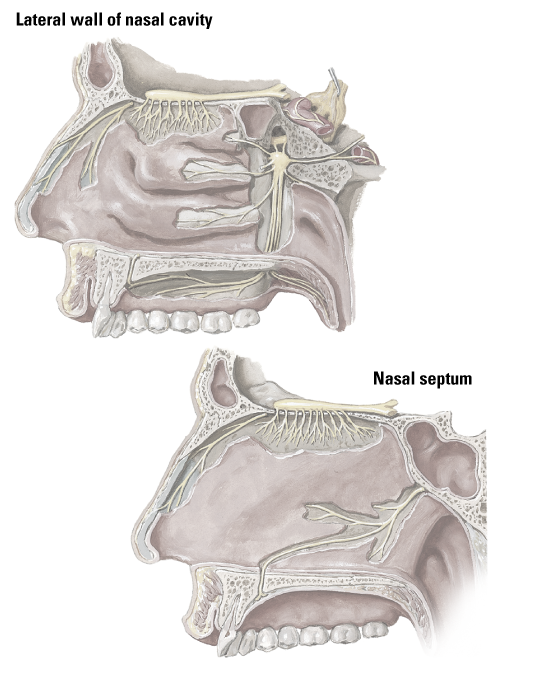

Olfactory bulb
Lateral nasal branch of anterior ethmoidal nerve
Palatine nerves (Greater palatine nerve; Lesser palatine nerve)
Nasopalatine nerve
Palatine branch of the nasopalatine nerve in the incisive canal
Nerve (vidian) of pterygoid canal
Deep petrosal nerve
Greater petrosal nerve
Pterygopalatine ganglion
Maxillary nerve (CN V2) (sphenopalatine foramen dissected away)
Olfactory tract
1
2
3
4
5
6
7
8
9
10
11